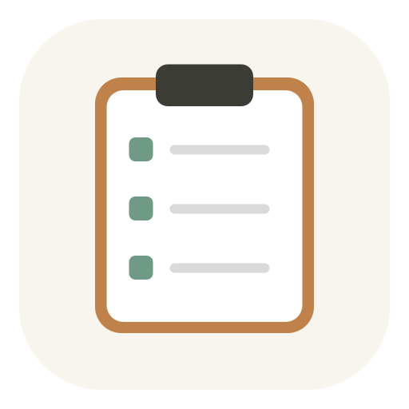

截图和项目文件，
散落在每一个入口
截完图先放桌面，微信文件随手下载，过几天只记得“好像保存过”，却想不起它究竟在哪里。

归拢 GatherboardGatherboard · 本地项目看板
截图散落在桌面，微信文件随手存在“下载”，时间一久，想找时怎么也找不到。归拢把任务、备忘、链接和文件按项目收在一起，用到时一眼就能找到。
首页文案保持简洁，下载入口在首屏可见。安装说明需要涵盖首次打开的系统提示。
所有资料都在本地，网站只负责介绍与下载。
产品说明README.md
复制视觉参考设计与交互规范
复制发布清单上线前最终检查
复制一个项目，就是一处完整的工作现场。
不是又一个复杂的协作平台。
你是不是也这样
文件还在电脑里，线索却散落在不同应用和不同日期中。真正浪费时间的，往往不是工作本身，而是反复寻找工作的上下文。
截完图先放桌面，微信文件随手下载，过几天只记得“好像保存过”，却想不起它究竟在哪里。
重名文件、临时素材和多个“最终版”混在一起。你不知道哪些已经归档，哪些下周还会用到。
当时记得很快，之后只能按日期翻找。任务、决策和灵感彼此分离，也离原来的项目越来越远。
归拢不要求你记住文件在哪里。
只要记得，它属于哪个项目。 看看如何整理 ↓一处，刚刚好
每个项目都有自己的任务、备忘、链接与文件。少一点来回切换，多一点真正推进。
记录截止日期、完成状态与当前进度。界面足够轻，让下一步始终清楚。
文字、表格和图片都能粘贴。灵感与决策紧挨着项目本身。
清楚胜过聪明，安静胜过热闹。
导入文件或整个文件夹，不转码、不锁定格式。随时都能从 Finder 直接找到。
把参考资料、在线文档和交付地址放回对应项目。标题清楚，复制和打开都只需一下。
本地优先
归拢没有在线账户，也不把资料上传到服务器。结构数据是 JSON，原始文件仍是原始文件。
打开 DMG双击刚刚下载的安装包。
拖入“应用程序”复制完成后即可推出安装盘。
启动归拢首次运行如被拦截，请在“隐私与安全性”中允许打开。